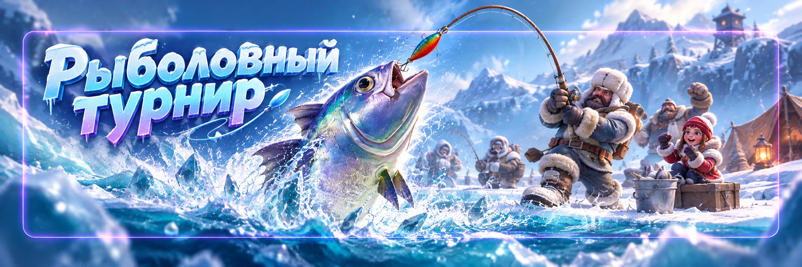
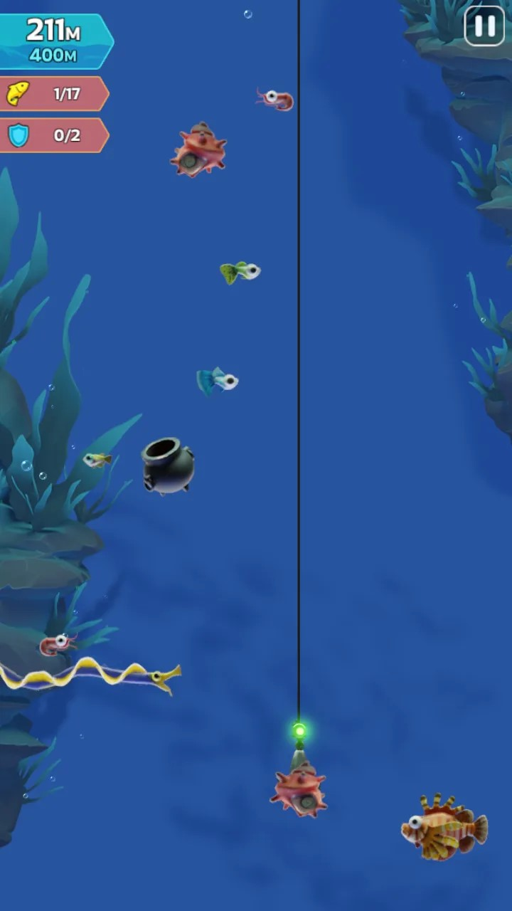
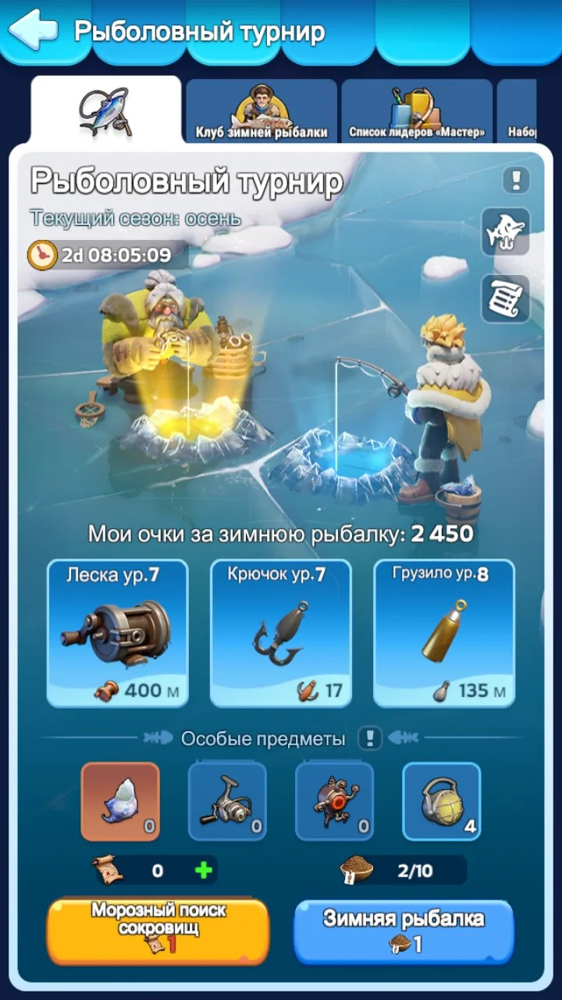

Рыболовный турнир
Автор: SOVA58
Мини-игра, где важно не собирать всё подряд, а пройти как можно глубже и забрать самую ценную добычу на обратном пути.

🪱 Наживка
Наживка постепенно восстанавливается. Не держите запас заполненным надолго: когда он полный, бесплатное восстановление простаивает. Лучше заходить в событие несколько раз и регулярно тратить попытки.
⬇️ Спуск
На спуске наша задача не ловить рыбу, а пройти как можно глубже.
- 🚧 обходим препятствия;
- 🐟 не цепляем обычную рыбу;
- ⬇️ сохраняем свободное место для подъёма.
⬅️ Держимся левого края
Так проще уходить глубже, меньше цеплять ненужную рыбу и удобнее обходить часть препятствий.
Не нужно намертво прижиматься к границе. Идём преимущественно слева и смещаемся только тогда, когда нужно обойти препятствие.
🐟 Когда начинаем ловить
Основную добычу собираем на обратном пути вверх.
Приоритет: 🆕 новая рыба для справочника → ⭐⭐⭐⭐⭐ пятизвёздочная → ⭐⭐⭐⭐ четырёхзвёздочная → 🎁 редкие предметы и находки → ⭐⭐⭐ трёхзвёздочная → обычная рыба, если осталось место.
🎯 Как цеплять рыбу
Старайтесь проводить крючок через голову или переднюю часть рыбы. Через хвост или заднюю часть иногда можно пройти, не поймав её. На подъёме удобно целиться чуть впереди направления движения рыбы.
🧵 Что улучшать первым
Главные улучшения: 🧵 леска для глубины, 🪝 крючок для количества добычи, ⚓ грузило для удобства спуска.
🔦 Фонарь
Фонарь особенно полезен в тёмной глубокой зоне. На небольшой глубине тратить его обычно нет смысла. Берегите его для глубоких и важных попыток.
🗺️ Особые предметы
Необязательно тратить редкие предметы в каждом турнире. Если сегодня цель только забрать обычные награды, часть запаса можно сохранить для серьёзной попытки на рейтинг или закрытие справочника.
❄️ Морозный старатель
В специальных попытках используется усиленный рыболовный комплект, поэтому их не обязательно откладывать только потому, что обычная леска ещё не полностью прокачана.
🔄 Неудачная попытка
Если дорогая попытка пошла плохо, откройте Пауза → Отступить и попробуйте снова. Это особенно полезно, когда использован редкий предмет, а спуск сразу не задался.
📖 Справочник
Если есть выбор между уже пойманной обычной рыбой и новой записью, чаще выгоднее брать новую. Справочник даёт постоянный прогресс.
🏆 Если идём за рейтингом
Для высокого места выгоднее заранее накопить ресурсы. F2P игрокам обычно проще пропустить несколько серьёзных заходов, накопить предметы, а потом использовать запас в одном турнире.

💬 Опыт игроков
- ✅ На спуске держитесь ближе к левому краю.
- ✅ Основную рыбу ловим на подъёме.
- ✅ Не забиваем крючок дешёвой добычей.
- ✅ Рыбу удобнее цеплять за голову.
- ✅ Меняем траекторию только ради препятствия или действительно ценной цели.
- ✅ Глубина важнее количества случайной рыбы.
- ✅ Не прожигаем все специальные предметы в каждом турнире.
- ✅ Плохую дорогую попытку можно перезапустить через «Отступить».
- ✅ Для серьёзного рейтинга выгоднее копить запас несколько циклов.
🚫 Частые ошибки
- ❌ собирать рыбу уже на первых метрах спуска;
- ❌ идти по центру и цеплять всё подряд;
- ❌ забивать крючок дешёвой добычей;
- ❌ ловить рыбу за хвост и промахиваться;
- ❌ тратить фонарь слишком рано;
- ❌ расходовать все редкие предметы каждый турнир;
- ❌ продолжать явно неудачную дорогую попытку;
- ❌ гнаться за рейтингом без запаса ресурсов.
✅ Быстрая схема
→ ⬅️ держимся левого края
→ ⬇️ идём максимально глубоко
→ 🚧 обходим препятствия
→ 🔄 разворачиваемся
→ 🐟 на подъёме выбираем ценную рыбу
→ 🆕 закрываем справочник
→ 🎁 забираем награды
→ 💾 редкие предметы сохраняем при необходимости
На спуске не рыбачим.
Держимся ближе к левому краю, идём глубже, сохраняем свободный крючок и начинаем выбирать добычу уже на обратном пути вверх.
Чем меньше случайной добычи собрали в начале, тем больше места останется для действительно ценной рыбы.